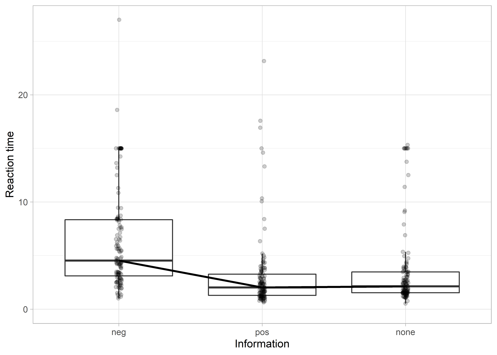
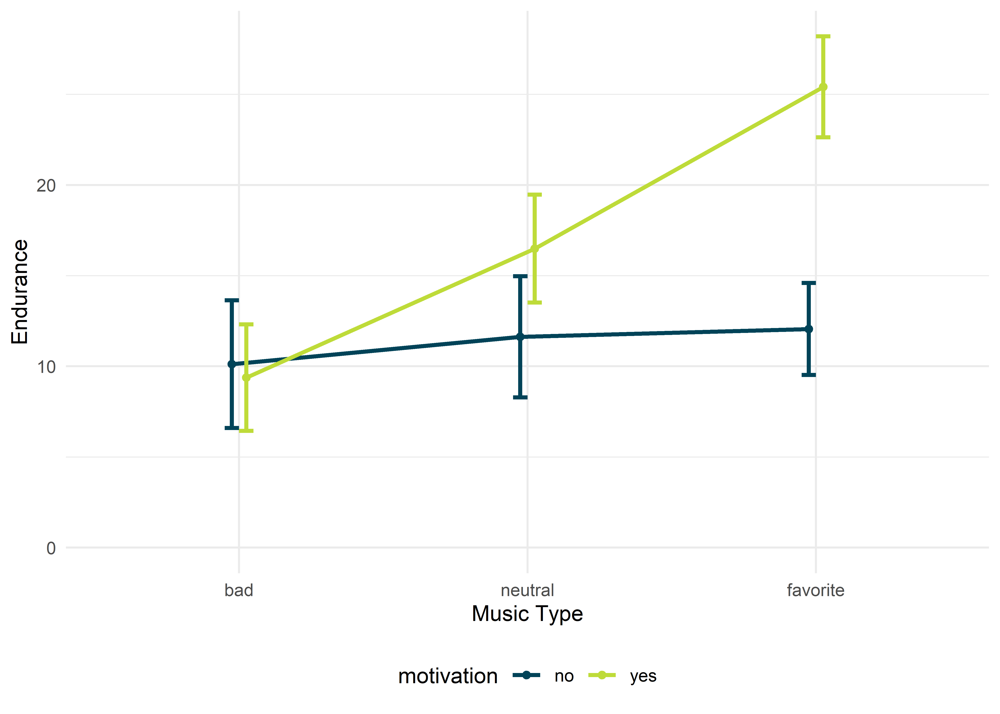

ANOVA mit Messwiederholung
Mit einer (allgemeinen) ANOVA mit Messwiederholung (repeated measures ANOVA) kann man mehr als zwei Gruppenmittelwerte in Abhängigkeit von kategorialen Prädiktoren vergleichen, wenn dieselben Probanden in mehreren Gruppen sind. Da die ANOVA ein Omnibus-Test ist, und so nur anzeigt, ob irgendwo ein signifikanter Unterschied zwischen den betrachteten Mittelwerten besteht, nutzt man entweder Kontraste oder Post-hoc-Tests, um herauszufinden, welche Mittelwerte sich letztendlich signifikant voneinander unterscheiden. Zusätzlich kann eine Simple Effects Analysis dazu genutzt werden, Unterschiede auf einzelnen Faktorstufen festzustellen.
ANOVAs mit Messwiederholung setzen auf listenweisen Fallausschluss, d.h., dass wenn in einer Messung eines Probanden auch nur eine Mesusng fehlt, dieser von der weiteren Analyse komplett ausgeschlossen wird. Generell kann man empfehlen, anstatt eine klassiche ANOVA, lieber Multilevel Linear Models zu berechnen.
Pakete
Alle Berechnungen und Abbildungen können wir mit unseren Standardpaketen durchführen. Wir benötigen das tidyverse zum Data Wrangling und zur Visualisierung der Daten. haven benötigen wir für den Import von SPSS-Dateien und rstatix für statistische Analysen. Wenn man sich den Import und das Bereinigen der Daten sparen möchte (Schritte, die man dennoch üben sollte), findet man die Daten auch im Paket costatcompanion.
Beispiel 1
Viele Hobby-Läufer finden das Laufen an sich sinnvoll, aber auf Dauer ziemlich langweilig. Wer sich nicht an der Fülle der Natur erfreuen kann, oder an ein Laufband in der eigenen Wohnung gebunden ist, der lenkt sich gerne mit Musik ab. Wir vermuten, dass es nicht egal ist, welche Musik die Läufer hören, sondern dass die Musik einen Einfluss auf die Leistung der Läufer hat. Dazu haben wir ein kleines Experiment durchgeführt, um diesen Effekt zu beschreiben – insofern es ihn gibt. Wir haben und ein paar Läufer aus den Parks des Ruhrgebiets geschnappt und uns von denen eine Liste von Musik-Titeln bewerten lassen. Für jeden Läufer konnten wir so “schlecht”, “neutrale” und “Lieblings-” Titel herausfinden und in individuellen Playlists abspeichern. Nun haben wir den Läufern beim Laufen an drei aufeinanderfolgenden Tagen zufällig eine dieser drei individuellen Playlists auf die Ohren gelegt und anschließend an das Training das empfundene Durchhaltevermögen auf einer Skala von 0 – 30 einschätzen lassen (natürlcih waren alle drei Läufe gleich lang). Höhere Werte bedeuten hierbei ein höheres, empfundenes Durchhaltevermögen.
Klassisch
Die Daten sind in der Datei runners.sav oder im Paket costatcompanion unter demselben Namen. Der Datensatz enthält drei Variablen: Die ID der Läufer (id), den für den Lauf gehörten Typ von Musik (music_type) und das nach dem Lauf eingeschätzte Durchhaltevermögen während des Laufes (endurance). Wir untersuchen also eine einfaktorielle Varianzanalyse mit dem Innersubjektfaktor “Music Type” mit drei Faktorstufen (“bad”, “neutral”, und “favorite”).
## # A tibble: 153 x 3
## id music_type endurance
## <chr> <fct> <dbl>
## 1 1 bad 4
## 2 1 neutral 26
## 3 1 favorite 24
## 4 2 bad 10
## 5 2 neutral 17
## 6 2 favorite 24
## 7 3 bad 8
## 8 3 neutral 11
## 9 3 favorite 30
## 10 4 bad 10
## # ... with 143 more rowsVoraussetzungen
Da wir uns im GLM bewegen, gelten die üblichen Voraussetzungen. Zusätzlich gilt bei wiederholten Messungen jedoch noch die Voraussetzung der Sphärizität.
EDA
Zu Beginn, schauen wir uns die Daten einmal an und lassen und deskriptive Statistiken ausgeben.
## # A tibble: 1 x 13
## variable n min max median q1 q3 iqr mad mean sd se
## <chr> <dbl> <dbl> <dbl> <dbl> <dbl> <dbl> <dbl> <dbl> <dbl> <dbl> <dbl>
## 1 enduran~ 153 4 30 16 11 23 12 8.90 16.6 7.20 0.582
## # ... with 1 more variable: ci <dbl>## # A tibble: 3 x 14
## music_type variable n min max median q1 q3 iqr mad mean
## <fct> <chr> <dbl> <dbl> <dbl> <dbl> <dbl> <dbl> <dbl> <dbl> <dbl>
## 1 bad enduran~ 51 4 18 9 6.5 11 4.5 2.96 8.98
## 2 neutral enduran~ 51 7 26 16 13.5 18 4.5 2.96 16.2
## 3 favorite enduran~ 51 19 30 24 22.5 26.5 4 2.96 24.6
## # ... with 3 more variables: sd <dbl>, se <dbl>, ci <dbl>
Wir sehen einen deutlichen Trend dahingehend, dass mit “Zunahme” der Valenz der gehörten Musik, also in die Richtung von “schlechter” zu “neutraler” zur “Lieblings-” Musik, auch das eingeschätzte Durchhaltevermögen der Läufer steigt (von \(M = 8.89, SD = 3.09\) auf \(M = 16.2, SD = 4.00\) auf \(M = 24.6, Sd = 2.68\)). Wie immer gibt es mehrere Möglichkeiten, mit denen man das darstellen kann. Entweder als Boxplots mit den originalen Datenpunkten (A) oder als “klassisches” Liniendiagramm mit eingezeichneten Mittelwerten und Fehlerbalken, die \(\pm\) 1 Standardabweichung anzeigen. Für ein einfaktorielles Design kann man die Boxplots bevorzugen, weil sie mit gleicher Klarheit deutlich mehr Information anzeigen können (wie z.B. Ausreißer).
Die Vaoraussetzung der Sphärizität müssen wir vorab nicht zwingend prüfen, weil uns das Paket rstatix unter die Arme greift. Geprüft wird diese mit Mauchlys Test. Ist dieser Test signifikant, also die Voraussetzung der Sphärizität nicht erfüllt, dann müssen die \(p\)-Werte korrigiert werden. Bemerkt rtstaix einen signifkanten Wert in Mauchlys Test, dann korrigiert es den \(p\)-Wert automatisch.
Durchführung
Die eigentliche Durchführung ist, wie immer, kurz und schmerzlos.
## ANOVA Table (type III tests)
##
## $ANOVA
## Effect DFn DFd F p p<.05 ges
## 1 music_type 2 100 272.105 3.54e-41 * 0.792
##
## $`Mauchly's Test for Sphericity`
## Effect W p p<.05
## 1 music_type 0.834 0.012 *
##
## $`Sphericity Corrections`
## Effect GGe DF[GG] p[GG] p[GG]<.05 HFe DF[HF] p[HF]
## 1 music_type 0.858 1.72, 85.75 1.11e-35 * 0.885 1.77, 88.5 9.64e-37
## p[HF]<.05
## 1 *Wenn wir diesen Befehl ausführen, dann sehen wir, dass Mauchlys-Test signifikant ist – die Variassetzung der Sphärizität ist nicht erfüllt. Eine gute Methode, um den \(p\)-Wert nun zu korrigieren, ist die Methode nach Greenhouse und Geisser (Greenhouse & Geisser, 1959). Um diese Korrektur1, wie versprochen, automatisch zu erhalten, lassen wir uns anschließend mit get_anova_table(), angehängt an den bereits ausgeführten Befehl, die ANOVA-Ergebnisse ausgeben.
## ANOVA Table (type III tests)
##
## Effect DFn DFd F p p<.05 ges
## 1 music_type 1.72 85.75 272.105 1.11e-35 * 0.792Das \(p\) ist nun identisch mit dem p[GG] im vorigen Output. Empfehlen würde ich jedoch, diese Schritt nicht durchzuführen und auf get_anova_table() zu verzichten, da wir Informationen aus dem vorigen Schritt (anova_test()) beim Berichten angeben müssen. Dazu zählt insbesondere der Wert (\(\varepsilon\)), um den letztendlich korrigiert wurde. Standardmäßig bekommen wir zwei Korrekturen angeboten: Die bereits erwähnt nach Greenhouse und Geisser und die nach Huynh und Feldt (Huynh & Feldt, 1976). Um kenntlich zu machen, welche Korrektur man genommen hat, gibt man als Index am \(\varepsilon\) am besten die Autorenkürzel an, also \(\varepsilon_\text{GG}\) für Greenhouse-Geisser und \(\varepsilon_\text{HF}\) für Huynh-Feldt.
Auch hier ist die ANOVA wieder nur ein Omnibus-Test, wir wissen also nun, dass sich die Werte zwischen unseren Gruppen irgendwo unterscheiden, aber nicht genau wo. Um das zu überprüfen, können wir Post-hoc-Tests nutzen.
## # A tibble: 3 x 10
## .y. group1 group2 n1 n2 statistic df p p.adj p.adj.signif
## * <chr> <chr> <chr> <int> <int> <dbl> <dbl> <dbl> <dbl> <chr>
## 1 endu~ bad neutr~ 51 51 -9.26 50 1.97e-12 1.97e-12 ****
## 2 endu~ bad favor~ 51 51 -28.9 50 7.32e-33 2.20e-32 ****
## 3 endu~ neutr~ favor~ 51 51 -12.6 50 4.37e-17 8.74e-17 ****Es unterscheiden sich alle Gruppen signifikant voneinander.
## # A tibble: 3 x 7
## .y. group1 group2 effsize n1 n2 magnitude
## * <chr> <chr> <chr> <dbl> <int> <int> <ord>
## 1 endurance bad neutral -1.28 51 51 large
## 2 endurance bad favorite -3.99 51 51 large
## 3 endurance neutral favorite -1.73 51 51 largeBerichten
We found the type of music to have an effect on runner’s perceived endurance during runs, \(F(2, 85.75) = 272.11, p < .001, \varepsilon_\text{GG} = .858, \eta_G^2 = .792\). Follow up post-hoc-tests revealed statistically significant differences between all groups (all \(p < .001\)). The “bad” and “neutral” group differed by Hedges’ \(g = 1.28\), “bad” and “favorite” by \(g = 3.99\), and “neutral” and “favorite” by \(g = 1.73\).
Robust
Natürlich hat Rand Wilcox (2017) auch für ANOVAS mit Messwiederholung eine robuste Alternative entwickelt und im Paket WRS2 (Mair & Wilcox, 2020) zur Verfügung gestellt. Diese kann mit dem Befehl rmanova() ausgeführt werden; Post-hoc-Tests mit rmmcp(), die Ausführung des Befehls weicht allerdings etwas von der bekannten Syntax ab.
library(WRS2)
# Robuste ANOVA mit Messwiederholung
with(runners,
rmanova(y = endurance, groups = music_type, block = id))## Call:
## rmanova(y = endurance, groups = music_type, blocks = id)
##
## Test statistic: F = 229.2643
## Degrees of freedom 1: 1.9
## Degrees of freedom 2: 56.92
## p-value: 0## Call:
## rmmcp(y = endurance, groups = music_type, blocks = id)
##
## psihat ci.lower ci.upper p.value p.crit sig
## bad vs. neutral -6.83871 -8.94367 -4.73375 0 0.0500 TRUE
## bad vs. favorite -15.67742 -17.10274 -14.25210 0 0.0169 TRUE
## neutral vs. favorite -8.00000 -9.56582 -6.43418 0 0.0250 TRUEAuch hier erhalten wir zuerst das Ergebnis, dass die Mittelwerte sich irgendwo signifikant unterscheiden, \(F_T(1.9, 56.92) = 229.26, p < .001\). Die robusten Post-hoc-Tests zeigen uns auch hier an, dass sich alle Gruppen signifikant voneinander unterscheiden.
Non-parametrisch
Friedman-ANOVA, allerdings nur für einfaktoriellen Designs. Wenn es mehrere Faktoren sein sollen, gibt es nur noch die robusten Alternativen (s.o.). Die Effektstärke für eine Friedman-ANOVA ist Kendalls \(W\), welches sich mit friedman_effsize() berechnen lässt. Als Post-hoc-Test wird der Wilcoxon signed-rank test genutzt. Dabei muss darauf geachtet werden, dass die Daten in der richtigen Reihenfolge sind! D.h., dass die Daten innerhalb eines Probanden immer in derselben Reihenfolge stehen müssen (hier immer die Abfolge von “bad”, “neutral” und “favorite”).
## # A tibble: 1 x 6
## .y. n statistic df p method
## * <chr> <int> <dbl> <dbl> <dbl> <chr>
## 1 endurance 51 96.1 2 1.38e-21 Friedman test## # A tibble: 1 x 5
## .y. n effsize method magnitude
## * <chr> <int> <dbl> <chr> <ord>
## 1 endurance 51 0.942 Kendall W large# Post-hoc-Test
runners %>%
wilcox_test(endurance ~ music_type, paired = TRUE, p.adjust.method = "holm")## # A tibble: 3 x 9
## .y. group1 group2 n1 n2 statistic p p.adj p.adj.signif
## * <chr> <chr> <chr> <int> <int> <dbl> <dbl> <dbl> <chr>
## 1 enduran~ bad neutral 51 51 16.5 4.60e- 9 4.60e-9 ****
## 2 enduran~ bad favori~ 51 51 0 5.12e-10 1.54e-9 ****
## 3 enduran~ neutr~ favori~ 51 51 3.5 9.26e-10 1.85e-9 ****Auch die Friedman-ANOVA liefert uns ein signifikantes Ergebnis, \(\chi^2(2) = 96.1, p < .001, W = .942\). Auch die Post-hoc-Tests ergeben signifikante Unterschiede zwischen allen Gruppen, da in allen Fällen \(p < .05\) ist.
Aus der Praxis
Ein wirklich tolles Experiment zur Akquisition von Ängsten bei Kindern führte Field (2006) durch. Er lud eine Reihe Kinder in sein Labor ein und erzählte ihnen Geschichten zu drei neuen Tieren (dem Quoll, dem Quokka und dem Cuscus). Dabei wurde zu einem Tier eine negative, “angsteinflößende”, Geschichte erzählt, zum dem zweiten Tier eine positive und zum dritten Tier gar keine. Nun zeigte Field den Kindern drei Holzboxen, und die Kinder sollten ihre Hand auf diese Boxen legen. Der Haken an der Sache war allerdings, dass Field den Kindern erklärte, dass in diesen Holzkisten nun jeweils eines der drei vorher vorgestellten Tiere lebte. Um zu untersuchen, ob die Kinder Angst vor dem Tier mit der negativen Geschichte hatten, maß er die Zeit, die die Kinder benötigten, um ihre Hand auf die Holzkisten zu legen. Um seine Hypothese zu überprüfen, führte er eine einfaktorielle ANOVA mit Messwiederholung durch, mit dem Innersubjektfaktor “Information” mit drei Faktorstufen (negativ, positiv, keine). Die Daten finden sich in der Datei field_2006.sav und stammen von der begleitenden Website von Field (2018). Bei Daten mit Messwiederholung erhält man meistens “unsaubere” Daten im wide-Format, wie auch in diesem Fall.
## # A tibble: 127 x 4
## code bhvneg bhvpos bhvnone
## <dbl> <dbl> <dbl> <dbl>
## 1 1 2.03 1.25 11.4
## 2 2 8.37 3.06 3.54
## 3 3 15 14.6 15
## 4 4 2.25 1.72 1.1
## 5 5 2.9 1.19 15
## 6 6 4.22 1.5 2.63
## 7 7 18.6 16.9 1.13
## 8 8 2.65 1.94 1.6
## 9 9 1.92 1.6 1.75
## 10 10 2.24 1.67 2.34
## # ... with 117 more rowsUnsere erste Aufgabe besteht also nun darin, die Daten ins “saubere” long-Format zu überführen. Dazu nutzen wir pivot_longer(). Als kleines Schmankerl geben wir noch das Argument names_prefix = "bhv" mit, dann werden die Buchstaben “bhv” automatisch entfernt und es bleiben nur noch “neg”, “pos” und “none” als Werte in der neuen Variable “information” übrig. Anschließend ändern wir unsere neue Variable “information” so, dass sie ein Faktor wird2.
animals_long <- animals %>%
pivot_longer(
cols = -code,
names_to = "information",
names_prefix = "bhv",
values_to = "reaction_time"
) %>%
mutate(information = as_factor(information))
animals_long## # A tibble: 381 x 3
## code information reaction_time
## <dbl> <fct> <dbl>
## 1 1 neg 2.03
## 2 1 pos 1.25
## 3 1 none 11.4
## 4 2 neg 8.37
## 5 2 pos 3.06
## 6 2 none 3.54
## 7 3 neg 15
## 8 3 pos 14.6
## 9 3 none 15
## 10 4 neg 2.25
## # ... with 371 more rowsKlassisch
EDA
Zu Beginn gucken wir uns die Daten wie immer einfach mal an. Um die Voraussetzung der Normalverteilung müssen wir uns keine Sorgen machen, da wir Daten von 127 Kindern, also einer großen Stichprobe, vorliegen haben.
## # A tibble: 3 x 14
## information variable n min max median q1 q3 iqr mad mean
## <fct> <chr> <dbl> <dbl> <dbl> <dbl> <dbl> <dbl> <dbl> <dbl> <dbl>
## 1 neg reactio~ 127 1 27 4.53 3.1 8.35 5.24 3.01 6.35
## 2 pos reactio~ 127 0.64 23.2 2.03 1.29 3.26 1.98 1.20 3.11
## 3 none reactio~ 127 0.52 15.3 2.13 1.53 3.48 1.94 1.02 3.49
## # ... with 3 more variables: sd <dbl>, se <dbl>, ci <dbl>
Wir bekommen eine leichte Idee dahingehend, dass die untersuchten Kinder deutlich länger gebraucht haben, um ihre Hand auf die Holzkiste mit dem “gefürchteten” Tier zu legen, weil die Reaktionszeiten länger sind. Holzkisten, die vermeintlich freundliche Tiere beinhalten, oder jene, zu denen man nichts weiß, werden schneller berührt. Wie immer bei Reaktionszeiten haben wir jedoch viele, viele Ausreißer. Wir rechnen jetzt einfach mal “normal” weiter, aber behalten im Hinterkopf, dass wir definitiv das robuste Verfahren anwenden sollten3.
Durchführung
Die Durchführung ist, wie immer, kurz und schmerzlos.
## ANOVA Table (type III tests)
##
## $ANOVA
## Effect DFn DFd F p p<.05 ges
## 1 information 2 252 58.684 1.19e-21 * 0.117
##
## $`Mauchly's Test for Sphericity`
## Effect W p p<.05
## 1 information 0.798 7.62e-07 *
##
## $`Sphericity Corrections`
## Effect GGe DF[GG] p[GG] p[GG]<.05 HFe DF[HF] p[HF]
## 1 information 0.832 1.66, 209.68 1.9e-18 * 0.842 1.68, 212.15 1.24e-18
## p[HF]<.05
## 1 *Mauchlys Test auf Sphärizität ist signifikant (\(W = 0.798, p < .001\)), weshalb wir schleunigst eine Korrektur der Freiheitsgrade nach Greenhouse-Geisser anstreben sollten (\(\varepsilon_\text{GG} = .832\)). Dazu aber beim “Berichten” mehr.
Wir wissen nun, dass sich die Reaktionszeiten der Kinder irgendwo unterschieden, aber wo genau? Dem kommen wir mit Post-hoc-Tests auf die Schliche.
animals_long %>%
pairwise_t_test(reaction_time ~ information, paired = TRUE, p.adjust.method = "holm")## # A tibble: 3 x 10
## .y. group1 group2 n1 n2 statistic df p p.adj p.adj.signif
## * <chr> <chr> <chr> <int> <int> <dbl> <dbl> <dbl> <dbl> <chr>
## 1 reac~ neg pos 127 127 9.07 126 1.93e-15 5.79e-15 ****
## 2 reac~ neg none 127 127 7.81 126 1.98e-12 3.96e-12 ****
## 3 reac~ pos none 127 127 -1.57 126 1.19e- 1 1.19e- 1 nsUnser erster Eindruck bestätigt sich. Die Hand auf eine Holzkiste zu legen, in der ein “furchterregendes” Tier hockt, dauert im Vergleich zu “freundlichen” Tieren, oder jenen ohne Informationen, signifikant länger (beide \(p < .001\)). Der Unterschied in der Reaktionszeit zwischen Tieren mit positiver oder gar keiner Geschichte ist nicht signifikant, \(p = .119\).
Effektstärken können wir uns natürlich auch wieder berechnen lassen.
## # A tibble: 3 x 7
## .y. group1 group2 effsize n1 n2 magnitude
## * <chr> <chr> <chr> <dbl> <int> <int> <ord>
## 1 reaction_time neg pos 0.800 127 127 large
## 2 reaction_time neg none 0.688 127 127 moderate
## 3 reaction_time pos none -0.139 127 127 negligibleBerichten
We found the kind of information given to kids to have a significant influence on the observed reaction time, \(F(2, 209.69) = 58.68, p < .001, \varepsilon_\text{GG} = .832, \eta_G^2 = .117\). Post-hoc-test revealed the differences between the “negative” and “positive” condition (\(p < .001, g = 0.80\)), as well as the “non” condition (\(p < .001, g = 0.69\)). The “positive” and “none” condition did not differ significantly, \(p = .119, g = -0.14\).
Robust
Wie wir bereits bei der explorativen Datenanalyse festgestellt haben, gibt es in diesem Datensatz eine Menge Ausreißer. Deshalb lont es sich, hier robust zu rechnen.
# Robuste ANOVA mit Messwiederholung
with(animals_long,
rmanova(y = reaction_time, groups = information, block = code))## Call:
## rmanova(y = reaction_time, groups = information, blocks = code)
##
## Test statistic: F = 78.1521
## Degrees of freedom 1: 1.24
## Degrees of freedom 2: 94.32
## p-value: 0# Robuste Post-hoc-Tests
with(animals_long,
rmmcp(y = reaction_time, groups = information, block = code))## Call:
## rmmcp(y = reaction_time, groups = information, blocks = code)
##
## psihat ci.lower ci.upper p.value p.crit sig
## neg vs. pos 2.41558 1.71695 3.11421 0.00000 0.0169 TRUE
## neg vs. none 2.07013 1.35313 2.78713 0.00000 0.0250 TRUE
## pos vs. none -0.20597 -0.40537 -0.00658 0.01351 0.0500 TRUEAuch hier erhalten wir das Ergebnis, dass sich die Werte irgendwo unterscheiden, \(F_T(1.24, 94.32) = 78.15, p < .001\). Die robusten Post-hoc-Tests allerdings liefern uns ein anderes ergebnis als die klassichen Methoden. Hier unterscheiden sich auch die positive und die neutrale Bedingung voneinander, \(\hat{\Psi} = -0.21, p = .014\) (zwar knapp, aber so ist Nullhypothesen-Signifikanztesten nun einmal).
Non-paramterisch
Wer in Anbetracht der viel besser geeigneten robusten Verfahren dennoch auf non-paramtrisch setzen möchte, der führt hier die Friedman-ANOVA durch.
## # A tibble: 1 x 6
## .y. n statistic df p method
## * <chr> <int> <dbl> <dbl> <dbl> <chr>
## 1 reaction_time 127 140. 2 3.33e-31 Friedman test## # A tibble: 1 x 5
## .y. n effsize method magnitude
## * <chr> <int> <dbl> <chr> <ord>
## 1 reaction_time 127 0.553 Kendall W large# Post-hoc-Test
animals_long %>%
wilcox_test(reaction_time ~ information, paired = TRUE, p.adjust.method = "holm")## # A tibble: 3 x 9
## .y. group1 group2 n1 n2 statistic p p.adj p.adj.signif
## * <chr> <chr> <chr> <int> <int> <dbl> <dbl> <dbl> <chr>
## 1 reaction_t~ neg pos 127 127 7612 1.47e-18 4.41e-18 ****
## 2 reaction_t~ neg none 127 127 6995 1.27e-17 2.54e-17 ****
## 3 reaction_t~ pos none 127 127 2950 1.10e- 2 1.10e- 2 *Auch mit dem non-parametrischen Verfahren erhalten wir ähnliche Ergebnisse, wie mit den robusten Verfahren. Die ANOVA an sich ist signifikant, \(\chi^2(2) = 140.00, p < .001, W = .553\). Die Post-hoc-Tests zeigten signifikante Unterschiede zwischen allen Gruppen (alle \(p \leq .010\)).
Beispiel 2
Auch bei ANOVAs mit Messwiederholung können natürlich mehrere Faktoren berücksichtigt werden. Unser Beispieldatensatz wurde z.B. um die Variable motivation erweitert, in der festgehalten wurde, ob ein Läufer zusätzlich zur gehörten Musik, an diesem Tag überhaupt motiviert war, zu laufen (daher die zwei Faktorstufen “yes” vs. “no”). Wir haben also neue Läufer rekrutiert und neue Daten gesammelt.
## # A tibble: 306 x 4
## id music_type motivation endurance
## <chr> <fct> <fct> <dbl>
## 1 1 bad no 16
## 2 1 neutral no 10
## 3 1 favorite no 14
## 4 1 bad yes 13
## 5 1 neutral yes 13
## 6 1 favorite yes 30
## 7 2 bad no 12
## 8 2 neutral no 9
## 9 2 favorite no 13
## 10 2 bad yes 3
## # ... with 296 more rows## # A tibble: 1 x 13
## variable n min max median q1 q3 iqr mad mean sd se
## <chr> <dbl> <dbl> <dbl> <dbl> <dbl> <dbl> <dbl> <dbl> <dbl> <dbl> <dbl>
## 1 enduran~ 306 3 30 13 10 17 7 5.19 14.2 6.29 0.359
## # ... with 1 more variable: ci <dbl>## # A tibble: 6 x 15
## music_type motivation variable n min max median q1 q3 iqr
## <fct> <fct> <chr> <dbl> <dbl> <dbl> <dbl> <dbl> <dbl> <dbl>
## 1 bad no enduran~ 51 3 16 10 7.5 13 5.5
## 2 bad yes enduran~ 51 3 15 10 8 12 4
## 3 neutral no enduran~ 51 3 18 11 9.5 14 4.5
## 4 neutral yes enduran~ 51 9 23 17 14 19 5
## 5 favorite no enduran~ 51 6 17 12 10 14 4
## 6 favorite yes enduran~ 51 19 30 25 24 27 3
## # ... with 5 more variables: mad <dbl>, mean <dbl>, sd <dbl>, se <dbl>,
## # ci <dbl>
Aus der Abbildung geht hervor, dass die Art der Musik wahrscheinlich eher einen Einfluss macht, wenn man motiviert ist. Ansonsten scheinen die Leistungen der Läufer nicht wirklich von der Art der Musik abzuhängen (blaue Linie).
## ANOVA Table (type III tests)
##
## $ANOVA
## Effect DFn DFd F p p<.05 ges
## 1 music_type 2 100 222.429 1.53e-37 * 0.599
## 2 motivation 1 50 222.713 4.72e-20 * 0.484
## 3 music_type:motivation 2 100 168.325 9.85e-33 * 0.482
##
## $`Mauchly's Test for Sphericity`
## Effect W p p<.05
## 1 music_type 0.959 0.355
## 2 music_type:motivation 0.991 0.810
##
## $`Sphericity Corrections`
## Effect GGe DF[GG] p[GG] p[GG]<.05 HFe DF[HF]
## 1 music_type 0.960 1.92, 96.03 3.74e-36 * 0.998 2, 99.78
## 2 music_type:motivation 0.992 1.98, 99.15 1.77e-32 * 1.032 2.06, 103.23
## p[HF] p[HF]<.05
## 1 1.83e-37 *
## 2 9.85e-33 *Mauchlys Test auf Sphärizität fällt für uns positiv aus (nicht signifikante Ergebnisse, da \(p = .355\) und \(p = .810\) und somit beide \(p > .05\)), weshalb wir eine “normale” ANOVA mit Messwiederholung berechnen können, ohne die Freiheitsgrade der Teststaistik im Anschluss zu korrigieren. Wir erhalten einen signifikanten Haupteffekt für den Faktor “Art der Musik”, \(F(2, 100) = 222.43, p < . 001, \eta_G^2 = .599\), und einen signifikanten Haupteffekt für den Faktor “Motivation beim Laufen”, \(F(1, 50) = 96.01, p < 001, \eta_G^2 = .288\). Viel wichtiger ist an dieser Stelle der signifikante Interaktionseffekt, \(F(2, 100) = 168.33, p < .001, \eta_G^2 = .482\). Wenn der Interaktionseffekt signifikant ist, können wir die Haupteffekte nicht einzeln interpretieren. Bzw. wir können es schon (niemand hält uns davon ab), aber es macht keinen Sinn.
Bei einer ANOVA mit Messwiederholung können wir dem Interaktionseffekt wieder mit einer Simple Effects Analysis (siehe faktorielle ANOVA) entgegentreten. Dabei betrachten wir den Unterschied in der gefühlten Ausdauer zwischen den Läufern pro Faktorstufe von “Art der Musik” und berechnen jeweils einfaktorielle ANOVAS. Anschließend ist es eine gute Idee, die \(p\)-Werte aufgrund multipler Testungen mit adjust_pvalue() zu korrigieren. Mit add_significance() können wir unsere so heiß geliebten Signifikanzsternchen ("*") ausgeben lassen.
runners_motivation %>%
group_by(music_type) %>%
anova_test(dv = endurance, wid = id, within = motivation) %>%
get_anova_table() %>%
adjust_pvalue(method = "holm") %>%
add_significance()## # A tibble: 3 x 10
## music_type Effect DFn DFd F p `p<.05` ges p.adj
## <fct> <chr> <dbl> <dbl> <dbl> <dbl> <chr> <dbl> <dbl>
## 1 bad motiv~ 1 50 1.41 2.41e- 1 "" 0.013 2.41e- 1
## 2 neutral motiv~ 1 50 66.8 8.90e-11 "*" 0.376 1.78e-10
## 3 favorite motiv~ 1 50 580. 3.59e-29 "*" 0.865 1.08e-28
## # ... with 1 more variable: p.adj.signif <chr>Wir können aus diesem Ergebnis schließen, dass sie Die Läufer in ihrer eingeschätzten Ausdauer nicht signifikant voneinander unterscheiden, wenn sie für sie unangenehme Musik hören und nicht motiviert sind. Bei neutraler und Liebligs-Musik unterscheiden sich die Läufer jedoch signifikant voneinander, je nachdem, ob sie motiviert sind oder nicht.
Robust
Gibt es nur für einfaktorielle ANOVAs.
Non-parametrisch
Gibt es nur für einfaktorielle ANOVAs.
Literatur
Field, A. P. (2006). The behavioral inhibition system and the verbal information pathway to children’s fears. Journal of abnormal psychology, 115(4), 742–752. https://doi.org/10.1037/0021-843X.115.4.742
Field, A. P. (2018). Discovering Statistics using IBM SPSS Statistics (5th ed.). SAGE.
Greenhouse, S. W., & Geisser, S. (1959). On methods in the analysis of profile data. Psychometrika, 24(2), 95–112. https://doi.org/10.1007/BF02289823
Huynh, H., & Feldt, L. S. (1976). Estimation of the Box Correction for Degrees of Freedom from Sample Data in Randomized Block and Split-Plot Designs. Journal of Educational Statistics, 1(1), 69–82. https://doi.org/10.3102/10769986001001069
Mair, P., & Wilcox, R. R. (2020). Robust statistical methods in R using the WRS2 package. Behavior Research Methods, 52(2), 464–488. https://doi.org/10.3758/s13428-019-01246-w
Wilcox, R. R. (2017). Introduction to Robust Estimation and Hypothesis Testing (4th ed.). Elsevier Academic Press.
Korrigiert werden einfach nur die Freiheitsgrade der Fehler, sie werden mit dem \(\varepsilon\) der Korrektur-Methode multipliziert.↩︎
Wer sich den Schritt über ein anschließendes
mutate()sparen möchte und etwas mehr Erfahrung im Tidyverse hat, der kann bereits beipivot_longer()das Argumentnames_ptypes = list(information = factor())angeben; tidyr formatiert diese Variable dann direkt als Faktor.↩︎Eine weitere Möglichkeit, vor allem bei Reaktionszeiten, ist die logarithmische Transformation der Daten, die Field (2006) auch tatsächlich durchgeführt hat. Ob und wann das sinnvoll oder empfohlen ist, hängt immer vom Forschungsfeld ab.↩︎